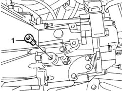

0010T41 MANUAL GEARBOX OIL CHECK LEVEL AND TOP UP IF NECESSARY
- Path
- Procedures > 00 MAINTENANCE > 0010 NEW UNITS AND PLANNED MAINTENANCE > 0010T VEHICLE OIL AND FLUIDS > 0010T41 MANUAL GEARBOX OIL CHECK LEVEL AND TOP UP IF NECESSARY
- Kind
- repair procedure (removal / refitting; the operation number is the code)
- Applies to
- all engines; all production periods
- Interactive page
- https://sloeber94.github.io/elrnDB-fPnd/en/#/2752381
Applies to: all engines; all production periods
Position the vehicle on a lift.
Raise the vehicle.
1. Undo the cap on the bellhousing checking that the oil contained in the actual bellhousing is at the level of the opening in the cap. If the level is below this, top up using oil of the same specifications.
Type | Component | Description | Qty. | |
|---|---|---|---|---|
- | Oil | MANUAL GEARBOX/DIFFERENTIAL FLUID | TUTELA CAR ZC 75 Synth | - |
Undo the cap on the bellhousing checking that the oil contained in the actual bellhousing is at the level of the opening in the cap. If the level is below this, top up using oil of the same specifications.
Type | Component | Description | Qty. | |
|---|---|---|---|---|
- | Oil | MANUAL GEARBOX/DIFFERENTIAL FLUID | TUTELA CAR TECHNYX Synth | - |

Applies to: all engines; all production periods
Tighten the enigne oil level cap to torque.
Lower the vehicle and remove from the lift.